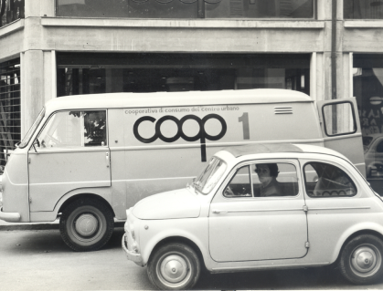
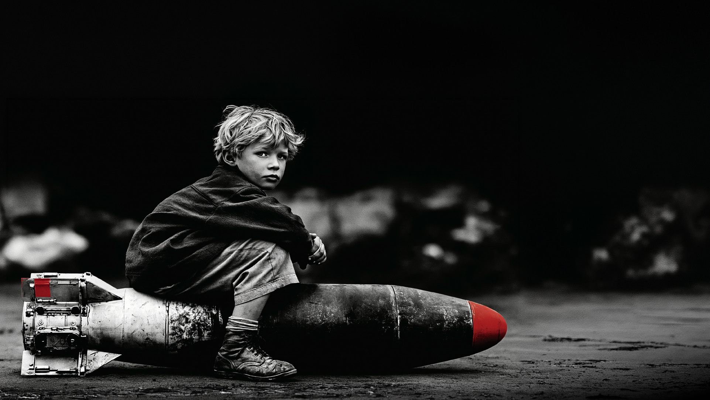

Premio Marketing 2026
39ª edizione
Il caso Coop.Focus sul Retail Marketing
Università degli Studi della Campania «Luigi Vanvitelli»Dipartimento di Economia · Capua
29 ottobre 2026Vittorio Amatucci · Michele Clemente
Start · Chi siamo
Chi siamo.
Vittorio AmatucciDirettore CommercialeMaster Franchising Coop Alleanza 3.0 Campania
Michele ClementeResponsabile Marketing StrategicoMaster Franchising Coop Alleanza 3.0 Campania
Di che colore è una cola?
Ve lo dico alla fine.

Capitolo
01
Chi è Coop
Da dove viene, in cosa crede
Immagine: Rapporto Coop 2026, anteprima digitale · Ancc-Coop
01 · Coop
Una rete di cooperative autonome.
67cooperative
6,2 mlnsoci
2.000+negozi
18regioni
~17 mlddi euro di vendite
57.000+lavoratori
Fonte: Premio Marketing SIM, Il caso Coop
01 · Coop · Il sistema
Un sistema, tre livelli.
67Cooperative autonomeognuna con i suoi soci e i suoi negozi, sul suo territorio
1Coop Italiaprodotto a marchio, marketing e acquisti, per tutte
1ANCC-Coopl’Associazione Nazionale Cooperative di Consumatori: rappresenta il sistema verso le istituzioni e ne fissa gli indirizzi comuni
Fonte: Premio Marketing SIM, Il caso Coop
01 · Coop · La storia
Seconda metà dell’Ottocento
Cibo di qualità a prezzi giusti.
La cooperazione di consumo nasce per garantirlo a tutti.
Lo stesso gesto, oggi.
Archivio Coop, anni ’70
01 · Coop
Customer centricity
Il cliente al centro. Non il prodotto.
In Coop il cliente può essere anche il proprietario.
01 · Coop
In questa parte
Il socio e la loyalty
Che differenza c’è tra un cliente fedele e un cliente proprietario.
01 · Coop · Domanda a voi
Socio Coop o Coop card: che differenza c’è?
A · Nessuna
B · Il socio ha più sconti
C · Il socio è proprietario
01 · Coop
Socioè parte dell’impresa
ComproprietàPartecipazioneVoce
Coop cardfidelizzazione commerciale
PuntiScontiCome tutti
01 · Coop · I soci
Gli utili non si distribuiscono.
Si reinvestono.
nella cooperativanei vantaggi per i socinella comunità
Fonte: Premio Marketing SIM, Il caso Coop
01 · Coop · La loyalty
Comportamentale«Torno perché conviene.»
Attitudinale«Torno perché mi riconosco.»
Di servizio«Torno perché qui la spesa è semplice.»
La card compra la fedeltà. Il socio la vive.
01 · Coop · La loyalty
In un anno, un italiano frequenta in media
7,6gruppi distributivi
11+insegne
Fonte: Rapporto Coop 2026, anteprima
01 · Coop · La loyalty, da vicino
Dietro una carta fedeltà.
01La riga di scontrinoOgni acquisto con la carta è un dato: cosa, quanto, quando, dove.
02Il profiloLe righe si sommano: abitudini, frequenza, spesa media, linee preferite.
03L’offerta personalizzataIl buono giusto alla persona giusta, non lo stesso sconto a tutti.
04Il retargetingChi ha guardato un prodotto in app o online lo ritrova in un annuncio.
05Il remarketingChi non torna da un po’ riceve un invito diretto: mail, app, WhatsApp.
06Il ritornoSi misura: torna? Spende di più? Questo è il ritorno della loyalty.
Retargeting: pubblicità a pagamento · Remarketing: canali propri dell’insegna
01 · Coop
In questa parte
I valori
Dove vanno gli utili, e in che cosa crede una cooperativa.
01 · Coop · Più Vicini
Gli utili non si distribuiscono. Si reinvestono.
~700progetti locali scelti da soci e clienti
6 mln+gettoni raccolti nei negozi
Fonte: Coop Alleanza 3.0, Più Vicini
01 · Coop · I valori
La Carta dei Valori.
01Mutualità
02Democrazia
03Solidarietà
04Equità
05Responsabilità sociale
«Il consumo non è solo un atto commerciale.»
Fonte: Carta dei Valori Coop
01 · Coop
In questa parte
50 anni
di storia, raccontata in spot.
01 · Coop · Cinquant’anni di comunicazione
I primi spot TV, firmati da un regista: un linguaggio popolare e cooperativo.Anni ’70Ugo Gregoretti
Uno slogan che trasforma il cliente in protagonista.Anni ’80«La Coop sei tu»
Un regista di New York racconta qualità e controlli.Anni ’90Woody Allen
Fonte: Premio Marketing SIM, Il caso Coop
01 · Coop · Cinquant’anni di comunicazione
I soci approvano i prodotti prima dello scaffale.2000«Approvato dai Soci»
Una comica torinese dà voce alla vicinanza.2010Luciana Littizzetto
Un hashtag trasforma la comunicazione in dialogo.2014#ChiediloallaCoop
A un’Esposizione Universale, il supermercato di domani.2015Expo Milano · Carlo Ratti
Fonte: Premio Marketing SIM, Il caso Coop
01 · Coop · 2021
Video da caricareassets/video/una-buona-spesa.mp4
«Una buona spesa può cambiare il mondo.»
Spot Coop, Havas Milan, 2021
01 · Coop
Close the Gap · «Riduciamo le differenze»ve la racconto da vicino tra poco
L’impatto più alto sulla reputazione.
Le meno conosciute: mai in TV né in radio.
Qui c’è spazio per voi.
Fonte: Premio Marketing SIM, Il caso Coop
Con le persone. Non alle persone.
Quale sarà il linguaggio della Gen Z?
01 · Coop
In questa parte
Forza e fragilità
Che cosa dicono i numeri del brand Coop. Il buono e il difficile.
01 · Coop · Forza
La forza.
111equity dell’insegna, seconda solo a Esselunga
120sul care: Coop si prende cura di me
114il prodotto a marchio, l’unico che traina l’insegna
BrandKite, media = 100 · Fonte: Premio Marketing SIM, Il caso Coop
01 · Coop · Fragilità
La fragilità.
15 → 10,9%la quota di mercato
Deboliinnovazione, esperienza e convenienza percepite
Poco notele campagne sui valori
2%ricorda Coop come touchpoint AI
N.1il negozio resta il punto di contatto più importante
Fonte: Premio Marketing SIM, Il caso Coop
Capitolo
02
Il mercato
Che cosa succede al cibo, alla cultura, alla società
Immagine: Rapporto Coop 2026, anteprima digitale · Ancc-Coop
02 · Il mercato
Ogni formato è una promessa.
42,1%Supermercativicinanza e scelta
9,9%Ipermercatitutto sotto un tetto
9,1%Libero serviziosotto casa
Quote a valore 2025 · Fonte: Premio Marketing SIM, Il caso Coop
02 · Il mercato · I formati, da vicino
Ogni canale, il suo cliente.
CanaleTarget principaleDriver di scelta
IpermercatoFamiglie numerose, «stoccatori»Assortimento completo, grandi formati, no food
SupermercatoFamiglie, tradizionalisti, value seekersComodità, qualità dei freschi, fedeltà all’insegna
Superette e prossimitàSingle, senior, clienti quotidianiVicinanza, velocità, servizio
DiscountBudget ridotti, smart shopperPrezzo più basso, semplicità
E-commerceNativi digitali, giovani professionisti, «time-poor»Risparmio di tempo, comodità
02 · Il mercato · I formati, da vicino
Tre modi di fare il prezzo.
Hi-LowPrezzi di listino medi, promozioni forti e frequenti, guidate dal volantino.Forza+Traffico e occasioni d’acquisto+Leva negoziale con le marcheDebolezza−Costi alti di gestione e logistica−Clienti che inseguono la promoPer esempio: Coop, Conad, Decò, Sole 365
Every Day Low PricePrezzo basso e stabile ogni giorno, poche promozioni.Forza+Fiducia sul prezzo+Domanda prevedibile, meno sprechiDebolezza−Poca sorpresa, difficile da raccontare−Serve un’efficienza altissimaPer esempio: programmi a prezzo fisso, come Gli Spesotti
DiscountAssortimento corto, tanta marca del distributore, layout essenziale.Forza+I prezzi più bassi del mercato+Costi e processi snelliDebolezza−Meno scelta, meno marche−Esperienza d’acquisto essenzialePer esempio: Lidl, Eurospin, MD
02 · Il mercato · Le insegne in Campania
Lidl
Eurospin
MD
Famila
Conad
Coop
Crai
Sigma
Decò
Sole 365
Dodecà
Piccolo
← convenienzaqualità e servizio →
← locale, campananazionale e internazionale →
Chi sta dove.
Asse orizzontale · endogenoDipende dall’insegna: prezzo, assortimento, marca propria, servizio.
Asse verticale · esogenoDipende dal contesto: radicamento sul territorio, origine, rete.
Il centro è affollato. Distinguersi è la sfida.
Posizionamento qualitativo · elaborazione didattica, da validare con i dati
02 · Il mercato · Indovina la classifica
Chi è il primo in Italia?
Esselunga
Coop
Lidl
Selex
Eurospin
Conad
VéGé
02 · Il mercato
Quote di mercato · Fonte: Premio Marketing SIM, Il caso Coop
02 · Il mercato
Marca del distributore: i prodotti con il marchio del supermercato
30,4%
Record. E su Coop c’è un finale sorprendente.
Fonte: Rapporto Coop 2026, anteprima
02 · Il mercato
In questa parte
Il Rapporto Coop 2026
Come cambiano gli italiani a tavola e al supermercato. E come cambiate voi.
#rappcoop26Rapporto Coop 2026Consumi e stili di vita degli italiani di oggi e di domani
Anteprima digitale · Sintesi preliminare
02 · Il mercato
Consumi delle famiglie in Campania, 2007–2025
−12,6%
Qui ogni scelta di spesa pesa di più.
Fonte: Rapporto Coop 2026, anteprima
02 · Il mercato
Le regioni dove i negozi Coop rendono più dei concorrenti per metro quadro
Toscana
Liguria
Campania
Qui Coop funziona.
Fonte: Premio Marketing SIM, Il caso Coop · dato da verificare sul documento
02 · Il mercato · Gli italiani oggi
Meno, ma meglio.
65%è favorevole a ridurre consumi e sprechi
Fonte: Rapporto Coop 2026, anteprima digitale
02 · Il mercato · Voi
200 euro in più: dove andrebbero?
41%
sceglierebbe una vacanza o un viaggio
Fonte: Rapporto Coop 2026, anteprima, tavola 44
02 · Il mercato
Prima la mente, poi il corpo.
+51,2%kefir
+26,3%semi
+25,5%yogurt greco e skyr
Fonte: Rapporto Coop 2026, anteprima
02 · Il mercato
Stress e ansia 27%. Sonno 23%.Dopo la mente e il corpo
Il primato della Gen Zbenessere psicologico e qualità del sonno
36% sente lontani i propri obiettivi di salute39% nella classe bassa, 18% in quella alta
Nei momenti difficili, il 52% cerca le persone vicine.Solo il 18% si rivolge a un professionista
Rapporto Coop 2026, anteprima, tavola 22 · Ufficio Studi Coop, «Today, Tomorrow 2026»
02 · Il mercato · Il cibo che cambia
Il cibo che cambia.
42%Alimentazione ibridaa metà tra tradizione e innovazione
→In casa tiene
↘Fuori casa rallenta
Nel carrello entranokefirfrutta seccasemiprodotti funzionali
Fonte: Rapporto Coop 2026, anteprima digitale
02 · Il mercato
2,2componenti in media per famiglia
36,8% →41,1%persone che vivono da sole, al 2050
28,6% →21,4%coppie con figli, al 2050
Fonte: Premio Marketing SIM, Il caso Coop
02 · Il mercato · Mani alzate
Quanto vale il vostro tempo?
APiù stipendio, meno tempo libero
BPiù tempo, con un reddito sufficiente
Deloitte Global, Gen Z and Millennial Survey 2025
02 · Il mercato · Voi
Gen Z che indica l’alta dirigenza come obiettivo principale di carriera
6%
Ambizione, con spazio per la vita.
Deloitte Global, Gen Z and Millennial Survey 2025, campione internazionale
02 · Il mercato · Mani alzate
Alzi la mano chi, questo mese, ha…
scritto una recensione
postato un prodotto
consigliato qualcosa sui social
Il mercato siete voi.
02 · Il mercato · Indovina la tua generazione
Gen Z che affiderebbe a un robot il compito di cucinare52%
Giovani che vogliono ridurre consumi e sprechi66%
Esperienze di vita contro cose possedute51 / 9
Fonte: Rapporto Coop 2026, anteprima
Voi, la Gen Z
La giuria vi chiede di capire voi stessi.
02 · Il mercato
Le persone cercano persone.
12 mlnvorrebbero più tempo per conoscere persone ed eventi
5 mlnvorrebbero far parte di gruppi e comunità
42%vuole partecipare di più a eventi culturali
Fonte: Rapporto Coop 2026, anteprima
02 · Il mercato
In questa parte
Cibo e cultura
Che cosa vuol dire, per Coop, legare il cibo alla cultura.
02 · Il mercato
Che cosa vuol dire «cibo e cultura»?
Ritoil cibo scandisce il tempo
Identitàdice chi sei e da dove vieni
Territoriouna terra, una filiera, delle persone
Insiemela tavola, il primo social network
02 · Il mercato · Cibo e cultura
Coop ha già cominciato.
La Tavola del Tempoun vodcast in 7 episodi: i consumi alimentari italiani dal secondo dopoguerra a oggi
Storie a Tavola700 racconti e ricette di soci e consumatori3 vincitori premiati a Terra Madre · Salone del Gusto, Torino, 24–27 settembre 2026
Fonte: Premio Marketing SIM, Il caso Coop
02 · Il mercato
Il cibo è cultura.
Unescola cultura italiana della tavola riconosciuta
700 raccontie ricette in «Storie a Tavola»
Terra Madrela partnership con Slow Food
La community è il motore: tavolate, racconti, laboratori, esperienze in negozio.
Una cooperativa è già una community.
Capitolo
03
Retail marketing
E le nuove logiche di segmentazione
Siete tutti un segmento.
Immagine: Rapporto Coop 2026, anteprima digitale · Ancc-Coop
03 · Retail marketing
Il supermercato, spiegato da zero.
Industriachi produce pasta, biscotti, detersivi
→
Distributorecompra in grande, porta nei magazzini e nei negozi
→
Voiche fate la spesa
GDO, grande distribuzione organizzata: catene che comprano insieme e vendono in migliaia di negozi. Coop è una di queste.
03 · Retail marketing
Retail marketing
Le decisioni con cui un negozio diventa una scelta per il cliente.
03 · Retail marketing
Comunicazione
fa conoscere
prima: a casa, sul telefonoa tuttisi misura sul ricordo
Retail marketing
fa scegliere
lì: in negozio, davanti allo scaffalea chi è entratosi misura sullo scontrino
03 · Retail marketing
Perché scegliete proprio quel negozio?
Vicinanza
Prezzo e qualità
Prodotti disponibili
Il tempo per fare la spesa
03 · Retail marketing
Le leve del retail marketing.
Assortimentocosa posso trovarenel Premio: sì
Prezzocosa pago e quale valore riconosconel Premio: no
Promozioniperché comprare adessonel Premio: no
Negozio e serviziquanto è semplice sceglierenel Premio: sì
03 · Retail marketing
Il marketing non è solo pubblicità.
Comunicadice chi sei
Ottimizzafa funzionare meglio le cose
Crea valoredà alle persone qualcosa che vale
Diffonde valorelo fa tornare a chi lo crea
03 · Retail marketing · Dietro le quinte
Dall’idea allo scaffale.
01L’idea8 settimane prima. In autunno spingiamo la pasta Fior Fiore.
02La pianificazione6 settimane prima. Prezzo promo, quantità, spazio in negozio.
03Il volantino3 settimane prima. Pagina, foto e frase: «Il sugo della domenica».
04Lo scaffaleLa settimana della promo. Testata, cartelli, degustazione il sabato.
05La misura del sell-outLa settimana dopo. +38% sul previsto. E il margine?
Esempio fittizio a scopo didattico
03 · Retail marketing · Dietro le quinte
Dietro uno scaffale ci sono almeno sei lavori.
Category managercosa sta sullo scaffale, e quanto spazio haEs. la pasta integrale passa da due a tre ripiani.
Trade marketingcon le marche: visibilità e promozioniEs. con una marca di caffè, una testata a novembre.
CRM e loyaltyla relazione con soci e clientiEs. un buono ai soci che da un mese non comprano frutta.
Retail media managervende gli spazi del negozio alle marcheEs. lo schermo all’ingresso, a un brand, per due settimane.
Data analystlegge i numeri, trova le anomalieEs. lo yogurt cala solo il martedì. Perché?
Store marketingallestimenti, comunicazione, eventiEs. l’angolo castagne e funghi a ottobre.
Esempi fittizi a scopo didattico
03 · Retail marketing
TikTok e lo scaffale.
01 · sul telefonoScopro un prodotto.
02 · recensioni, amiciCerco una conferma.
03 · qui gioca il retailScelgo dove comprarlo.
Fonte: TikTok Newsroom, 17 settembre 2025
03 · Retail marketing
Drive to store.
Tutto lavora per portare le persone in negozio.
¼delle vendite passa dalle promozioni. Ma non decidono più chi vince.
+5,5%la frequenza d’acquisto. In negozio si torna.
Fonte: Rapporto Coop 2026, anteprima
03 · Retail marketing
In questa parte
Segmentare
Dalle famiglie per età alle persone una a una. E un esercizio per voi.
03 · Retail marketing · Segmentazione
IeriEtàSessoRedditoZona
Oggi
Bisogni e stili di vitafree from · rich in · benessere
Missioni di spesaperché entro, oggi, in questo negozio
Fasi di vitafuori sede, coppia, primo figlio, figli grandi
Valoriin che cosa credo, quando compro
03 · Retail marketing · Segmentazione
Stessa persona, quattro missioni.
La spesa grandecarrello pieno, una volta a settimana
Il rifornimento velocelatte, pane, frutta: entro ed esco
Il pranzo in pausapronto da mangiare, adesso
La cena improvvisataalle sette di sera, senza un piano
03 · Retail marketing · Segmentazione per valori
Dire · quanto ne parlano ↑
Fare · quanto la praticano →
Sempre Verdi2,5 mln
Verdi Attenti5 mln
Vorrei ma non posso8,5 mln
Equilibristi3 mln
Verdi per caso2,9 mln
Verdi mai3,8 mln
Dire e fare.Le famiglie italiane divise per il loro rapporto con la sostenibilità.Il divario tra ciò che si dice e ciò che si compra.
Fonte: Rapporto Coop 2026, anteprima digitale · posizione nella matrice a scopo didattico
03 · Retail marketing · Segmentazione
Domani: fino all’uno a uno.
I dati della carta socio permettono segmenti sempre più piccoli.
03 · Retail marketing
Prosumer
producer + consumer
UGCcontenuti creati da chi compra
Co-creazioneidee costruite insieme
Sviluppo prodotticon chi li usa
Il socio è il prosumer originale.
03 · Retail marketing · Esercizio · un esempio di segmento
DINK
Double Income, No Kids
Poco tempo. Esperienze, benessere, scoperta. Il cibo come cultura e occasione sociale.
Nel loro carrello
Formati e porzioni diverse
Servizio
Prodotti che fanno risparmiare tempo
Occasioni da vivere
03 · Retail marketing · Segmentare
Segmenti per famiglia e lavoro.
DINKDouble Income, No KidsNucleo a doppio reddito senza figli. Alta spesa discrezionale: premium, esperienze, servizio.
DINKWAD… With A DogVariante del DINK: l’animale domestico assorbe quote crescenti di spesa, dal pet food premium alla cura.
SINKSingle Income, No KidsNucleo unipersonale, in forte crescita. Guida la domanda di monoporzioni e piatti pronti di qualità.
DEWKsDual Employed With KidsEntrambi i genitori lavorano. Il vincolo è il tempo: spesa online, piatti pronti, servizi.
NEETNot in Education, Employment or TrainingGiovani fuori da studio e lavoro. Consumi di base, alta sensibilità al prezzo, dipendenza dal budget familiare.
BOBOBourgeois BohemianAlto reddito e valori post-materialisti: bio, etico, di nicchia. Rifiuto del lusso ostentato.
Fonte: elaborazione su classificazioni NielsenIQ e letteratura di marketing
03 · Retail marketing · Segmentare
Segmenti per attitudine e benessere.
AOMAnti-Obesity MedicationsChi usa farmaci per il controllo del peso. Meno calorie, porzioni più piccole, più proteine e integratori.
ClimatarianiGreen enthusiastsScelgono in base all’impronta di carbonio: filiera corta, packaging riciclato, meno carne.
KidultsKid + adultAdulti, spesso Millennial e Gen Z, che comprano giochi e collezionabili per sé.
Longevity seekersOver 60 attiviAlimentazione funzionale (proteine, calcio, omega-3) e alta disponibilità a spendere per il benessere.
Fonte: elaborazione su NielsenIQ; Circana per i Kidults
03 · Retail marketing · Esercizio
Costruite un segmento reale.
01Chi èetà, famiglia, reddito, dove vive
02Cosa famissioni di spesa, frequenza, canali
03Cosa cercabisogni, valori, tensioni
04Quanto valedimensione, spesa, crescita
05Dove lo incontrotouchpoint e momenti della giornata
Poi due filtri:AttrattivitàCoerenza con i valori Coop
03 · Retail marketing
In questa parte
Il prodotto a marchio
Sette linee, sette promesse. E perché pesa così tanto sul brand.
03 · Retail marketing
111l’insegna Coop
114il prodotto a marchio Coop
L’unico supermercato dove è il prodotto a trainare il negozio.
BrandKite, media = 100 · Fonte: Premio Marketing SIM, Il caso Coop
03 · Retail marketing
Sette linee. Sette bisogni.
CoopQualità accessibile, sicurezza e trasparenza, ogni giorno.Valori nella media: rischia di somigliare agli altri. Spunto per il piano.
Fior FioreEccellenze gastronomiche e patrimonio alimentare.121122122
distintività · reputazione · rilevanza. La più premiante, anche se si compra di rado.
Vivi VerdeBiologico e sostenibilità ambientale.Care 117Meno diffusa, perché più specifica.
Bene.sìBenessere, equilibrio nutrizionale, functional food.Care 113La meno conosciuta, con un grande potenziale.
SolidalCommercio equo e responsabilità delle filiere.
CrescendoNutrizione e prodotti per l’infanzia.
Gli SpesottiConvenienza e sicurezza garantita.Conosciuta e comprata, ma equity debole: un solo motivo di scelta.
BrandKite, media = 100 · Fonte: Premio Marketing SIM, Il caso Coop · loghi ufficiali da inserire
Per la garaNiente nuovi prodotti né promozioni. Sì a riorganizzare e valorizzare l’assortimento esistente.
03 · Retail marketing · Una linea per ogni persona
La studentessa fuori sedeGli Spesotti
Il papà con un bambino piccoloCrescendo
La ragazza attenta all’ambienteVivi Verde
L’assortimento è segmentazione resa visibile.
03 · Retail marketing
Free from
«senza»Rich in
«ricco di»
I «senza» che valgono di più
40%senza additivi
39%senza zuccheri aggiunti
34%senza coloranti
73%considera importanti i prodotti che fanno bene alla persona
57%è disposto a pagarli di più
Fonti: Rapporto Coop 2026, anteprima · Premio Marketing SIM, Il caso Coop
Capitolo
04
Il punto vendita
Spazio, comunicazione, numeri
Foto: Unsplash
04 · Il punto vendita · Servicescape e blueprint
Il negozio è il touchpoint numero uno.
per memorabilità e reputazione·scaffali ordinati, un luogo piacevole
Fonte: Premio Marketing SIM, Il caso Coop
04 · Il punto vendita
Banchi freschi
Panetteria
e gastronomia
Ortofrutta
Latte
acqua
pane
Casse
↑ ingresso
uscita ↓
Cosa vedo prima. Cosa scopro dopo.Il negozio è un percorso progettato.
Cosa vedo primaL’ortofruttacolore, freschezza, stagione
Il percorsoIl giro lungolungo il perimetro, tra i freschi
Cosa vengo a cercareI beni di destinazionelatte, acqua, pane: in fondo, per attraversare il negozio
Cosa scoproLe testate di gondolain testa alle corsie: novità e occasioni
Cosa scelgoLo scaffale ad altezza occhiquello che si vede, si sceglie
L’ultimo momentoLa cassal’acquisto d’impulso
Pianta schematica, a scopo didattico
04 · Il punto vendita
Lo scaffale parla.
Linearei metri di scaffale dati a una categoria: più metri, più importanza
Facingquante confezioni si vedono di fronte: tre si notano, una si perde
Altezza occhiil posto più visto, e il più conteso
Ogni centimetro è una scelta.
Servicescape.
LuceColoriPercorsiSuoniProfumiPersoneSegnaletica
04 · Il punto vendita
In questa parte
Sette tecniche in negozio
Dal volantino alla cassa: gli strumenti per farsi notare e scegliere.
04 · Il punto vendita
Valore e prezzo, insieme.«Mangiare sano non è mai stato così conveniente»
Free fromSenza lattosio · senza glutine · senza zuccheri aggiunti
Rich inBene.sì Plus con i probiotici, accanto al kefir: +51,2%
Una linea diventa stile di vita.Vivi Verde entra nella Beauty Routine
Non solo prezzi: valori.«In equilibrio su tutta la linea» · «Una linea di prodotti certificati». Il volantino è un mezzo editoriale.
Uno a uno.La community WhatsApp: un canale diretto. Ci torniamo.
Volantino Coop, «la Gamma del Benessere», pp. 10–11
Comunicare in negozio · 2/8
Cartellonistica e segnaletica
Orienta, informa, convince.
La segnaletica di reparto: dove sono.Il cartello prezzo: quanto conviene.Il cartello valore: perché sceglierlo, tra origine, filiera e soci.
Comunicare in negozio · 3/8
Testate di gondola e isole
Dove si scopre.
La testata: la vetrina in testa alla corsia.L’isola: ci si gira attorno, si tocca.Si cambiano a rotazione: ogni settimana una storia.
Comunicare in negozio · 4/8
Degustazioni ed eventi
Il prodotto si prova.
L’assaggio in corsia.Show cooking e incontri con i produttori.Il negozio diventa un luogo di incontro.
Comunicare in negozio · 5/8
Digital signage
Lo schermo che cambia.
Contenuti diversi per orario e reparto.Si misura: impression e persone raggiunte.È anche uno spazio di retail media: ci torniamo.
Comunicare in negozio · 6/8
L’ultimo metro: la cassa
L’ultimo acquisto, l’ultima impressione.
I prodotti d’impulso a portata di mano.Il tempo in coda pesa sulla soddisfazione.Il saluto: l’ultima cosa che si ricorda.
Comunicare in negozio · 7/8
Il packaging come mezzo
La confezione parla anche a casa.
Va in dispensa, in tavola, sui social.Un QR porta a contenuti e storie.Si riprogetta senza creare un nuovo prodotto.
04 · Il punto vendita
In questa parte
La campagna in negozio
Come una campagna sui valori vive tra gli scaffali.
04 · Il punto vendita
One to one
Human to human
Comunicare in negozio · 8/8 · La community WhatsAppGià attivo sul territorio: la community WhatsApp del volantino.
04 · Il punto vendita · Close the Gap 2023
Il silenzio parla.
400.000confezioni bianche
~1.000negozi
7storie di donne
04 · Il punto vendita
Il negozio diventa una piazza.
4%l’IVA sugli assorbenti, per una settimana
260negozi con le firme contro la «tampon tax»
04 · Il punto vendita · Close the Gap
Close the Gap continua.L’agenda 2026: formazione, filiera, scuole.
Bozza riservata: verificare prima di proiettare
04 · Il punto vendita
In questa parte
I numeri del negozio
Vendite, margini, KPI. E un report da leggere insieme.
04 · Il punto vendita
Da dove vengono le vendite.
Venditeil fatturato
=
Clientiattivi
×
Frequenzavisite per cliente
×
Scontrinomedio
Formula didattica
04 · Il punto vendita
Incassare non è guadagnare.
2,00 €prezzo di vendita
1,30 €costo del prodotto
0,70 €margine, prima di tutti gli altri costi
Esempio didattico ipotetico, importi al netto dell’IVA
04 · Il punto vendita
Vendere di più, rendere meno.
Prima100 pezzi × 0,70 €70 €
In promozione150 pezzi × 0,40 €60 €
Esempio didattico ipotetico, senza contributi del fornitore
04 · Il punto vendita · Le metriche
Sette domande, sette famiglie di numeri.
01Mi conoscono?reach · ricordo · brand equityCoop 111
02Entrano?ingressi · frequenza
03Comprano?tasso di conversione · scontrino medio · pezzi per scontrino
04Tornano?retention · soci attivi · valore del cliente nel tempo
05Il negozio funziona?vendite al metro quadro · rotture di stockCoop 7.558 € al mq l’anno
06La comunicazione ha funzionato?aperture · click · ROAS · incrementalità
07Sono soddisfatti?NPS · reclami
Brand equity: BrandKite, media = 100 · Fonte: Premio Marketing SIM, Il caso Coop
04 · Il punto vendita · Gioco
Trova le anomalie.
3problemi nascosti nel report
2:00minuti, con chi vi siede accanto
Lunedìcosa fareste, alle 8 di mattina
Report settimanale · settimana 40Coop · Città di Fantasia · 1.200 mq
Dati inventati a scopo didattico02:00clic per avviare
Vendite168.000 €+2,8% sull’anno · −1,5% sul budget
Ingressi9.400
Scontrini7.300
Conversione78%
Scontrino medio23,00 €+1,9%
Pezzi / scontrino9,8
SociVendite con carta socio64%
Scontrino medio soci28,40 €
Scontrino medio non soci14,90 €
Soci attivi nel mese3.900
Frequenza media
visite al mese4,1
AssortimentoQuota prodotto a marchio
Fior Fiore 3,4% · Vivi Verde 2,1% · Bene.sì 1,6%29,5%
Vendite in promozione27,1%
Freschi
delle vendite41%
Pagine benessere del volantino
vendite dei prodotti in pagina+22%
Negozio e clientiRotture di stock sui freschi
sabato pomeriggio · obiettivo sotto il 3%6,8%
NPS
mese precedente: 4438
Reclami
quasi tutti sulle code alle casse del sabato11
Community WhatsApp2.300 iscritti (+140)lettura 72%click 9%
Schermo in negozio · campagna kefir52.000 impression6.100 personevendite +18% sui negozi di controlloROAS 3,4
04 · Il punto vendita · Le metriche
Tre anomalie. Tre mosse per lunedì.
Anomalia 01Rotture di stock sui freschi, il sabato6,8%obiettivo sotto il 3%Lunedì mattinaRivedere ordini e rifornimento dei freschi per il sabato pomeriggio.
Anomalia 02NPS in calo, reclami per le code44 → 3811 reclami, quasi tutti sulle code del sabatoLunedì mattinaPiù casse aperte il sabato, e misurare il tempo di attesa.
Anomalia 03Lo scontrino dei non soci è molto più basso14,90 €contro 28,40 € dei sociLunedì mattinaUn’opportunità: farli diventare soci, a partire dalla cassa.
Dati inventati a scopo didattico
04 · Il punto vendita
In questa parte
Blueprint e laboratorio
Disegnare l’esperienza, momento per momento. Poi tocca a voi.
04 · Il punto vendita · Più Vicini
Prima, a casaIn cassaDopo
Evidenze fisicheil volantinoil gettone, l’urnail progetto realizzato
Azioni del clientescopre l’iniziativariceve e sceglie dove votarevede cosa ha finanziato
Front stagecomunicazione in negozioil cassiere spiega e consegnaevento di consegna
linea di visibilità
Back stageselezione dei progetticonteggio dei gettonierogazione dei fondi
Processi di supportopiano volantinologistica delle urnerendicontazione ai soci
04 · Il punto vendita
Un ventenne, o una coppia DINK, entra per la prima volta in un Coop.
Disegnate il percorso: dal telefono in mano fuori dal negozio, all’uscita.
Un momento in cui Coop lo conquistaUn momento in cui lo perde
Lavoro
06:00
clic per avviare
04 · Il punto vendita
Dove lo conquista. Dove lo perde.
Tre gruppi · un minuto ciascuno
Restituzione
03:00
clic per avviare
Premio Marketing 2026 · Laboratorio · Blueprint · Gruppo ______
Fuori, telefono in manoIngressoTra gli scaffaliCassaUscita
Evidenze fisiche
Azioni del cliente
Front stage
Back stage
Processi di supporto
Conquista ✓ / Perde ✕
Sotto la linea rossa tratteggiata il cliente non vede. Segnate i momenti della verità.
04 · Il punto vendita
1Visitarepiù negozi, giorni e orari diversi→ analisi e target
2Mappareservicescape e blueprint→ esperienza in negozio
3Studiarele linee Coop e i volantini: vi dicono come l’insegna legge i bisogni→ prodotto, packaging, assortimento
4Chiederesurvey, sondaggi, interviste: non rispondete da soli→ soci e comunità
04 · Il punto vendita
Ogni idea arriva con i suoi KPI.
Il numero che dirà se ha funzionato.

Capitolo
05
Il futuro
È già in negozio: retail media e AI
Immagine: Rapporto Coop 2026, anteprima digitale · Ancc-Coop
05 · Il futuro · Retail media
Il supermercato ha due clienti.
Cliente 1Voicomprate prodotti
Cliente 2Le marchecomprano spazio e attenzione
Il secondo pagamento si chiama retail media.
05 · Il futuro · Retail media
Industria
Supermercato
Voi
Sell-inl’industria vende al supermercato: la merce entra in magazzino
Sell-outil supermercato vende a voi: la merce esce dallo scaffale
Contano allo stesso modo. È cambiato da dove si parte.
05 · Il futuro · Retail media
Un’inversione di rotta.
Prima · sell-in
Al tavolo: commerciale e acquisti
«Compro X perché ho venduto Y.»
Oggi · si parte dal cliente
1 · Ascolto il cliente
2 · Riorganizzo l’assortimento
3 · Lo personalizzo
4 · Definisco lo scaffale
→ Vendo: sell-out
Serve una cosa sola: dati di qualità e report affidabili.
05 · Il futuro · Retail media
Prima: dove andavano i soldi delle marche.
In TV e sui giornaliper farsi conoscere · budget di comunicazione
Nelle promozioniper farsi comprare · budget trade
Il negozio vendeva. Non parlava.
Sell-out · cosa si compra davveroRetail media · servizi a industria e marketing
05 · Il futuro · Retail media
Il retail media, in concreto.
Lo schermo sopra lo scaffale
Il prodotto in evidenza nell’app
Il banner nella spesa online
Il buono su misura, dopo la cassa
La marca paga per farsi vedere lì, vicino alla decisione.
05 · Il futuro · Retail media
L’attenzione ha un valore.
Instagramsa chi ha visto il post
Il supermercatosa chi poi ha comprato
05 · Il futuro · Retail media
Che cosa cambia.
PrimaOggi
Il budgetin TV→anche nel negozio
Il ruoloil supermercato compra→compra e vende spazi
La misurachi ha visto→chi ha comprato
05 · Il futuro · La misura
Visto. Comprato. Grazie alla campagna?
Reachpersone uniche raggiunte
ROASricavi attribuiti ÷ spesa pubblicitaria
Incrementalitàvendite in più causate davvero dalla campagna
Ricordate la campagna kefir? +18% · ROAS 3,4
05 · Il futuro
In questa parte
Il supermercato di domani
Cinque domande, un esperimento del 2015, otto scenari.
05 · Il futuro · Domanda 1 di 5
Come immaginate il supermercato tra dieci anni?
05 · Il futuro · Domanda 2 di 5
Cosa vi fa perdere tempo oggi, quando fate la spesa?
05 · Il futuro · Domanda 3 di 5
Vi fidereste di uno schermo che vi consiglia cosa comprare?
05 · Il futuro · Domanda 4 di 5
Cosa dovrebbe sapere di voi un negozio, e cosa no?
05 · Il futuro · Domanda 5 di 5
Entrereste in un supermercato senza casse?
Coop ci aveva già pensato.
Undici anni fa.
05 · Il futuro
Bastava avvicinare la mano.Poi è diventato un negozio vero: Bicocca Village, Milano.
05 · Il futuro
Banchi bassi come un mercato. Schermi sospesi.Il luogo racconta una promessa.
05 · Il futuro · Voi e il 2015
Voi, oggi. Coop, nel 2015.
Avete detto……………
Il Supermercato del Futuro, Expo 2015Bastava avvicinare la mano a un prodottoBanchi bassi, come un mercatoSchermi sospesi: il luogo racconta una promessaPoi un negozio vero, al Bicocca Village di Milano
Scenario possibile 1/8 · non è un piano Coop
Un assistente che vede, ascolta e consiglia.
Nel 2015 bastava avvicinare la mano all’etichetta. Domani potrebbe bastare chiedere.
Scenario possibile 2/8 · non è un piano Coop
Scaffali che conversano.
Rispondono alle domande, invece di interrompere.
Scenario possibile 3/8 · non è un piano Coop
Casse senza code.
La spesa si paga da sola, mentre si esce.
Scenario possibile 4/8 · non è un piano Coop
Consigli su misura.
Per chi cerca free from, rich in o benessere.
Scenario possibile 5/8 · non è un piano Coop
Schermi che cambiano.
Contenuti diversi per orario, stagione e persone presenti.
Scenario possibile 6/8 · non è un piano Coop
Robot in cucina, e a casa.
Il 52% della Gen Z affiderebbe a un robot il compito di cucinare.
Fonte: Rapporto Coop 2026, anteprima digitale
Scenario possibile 7/8 · non è un piano Coop
Il negozio come piazza.
Cucina, corsi, tavolate, community.
Scenario possibile 8/8 · non è un piano Coop
I dati restano del socio.
In una cooperativa, i dati possono restare delle persone.
05 · Il futuro
In questa parte
L’AI in negozio
Che cosa cambia quando il negozio capisce le domande.
05 · Il futuro
La pubblicità classica parla a tutti e interrompe.
Qui il cliente chiede, il negozio risponde.
05 · Il futuro
Ogni domanda è un dato.
Chi lo traccia, sa difendere il proprio lavoro: davanti al direttore e davanti all’industria che investe.
05 · Il futuro
La conversazione torna offline.
LLMLarge Language Modellegge le parole
LMMLarge Multimodal Modelvede, ascolta, capisce il contesto
05 · Il futuro · Indovina il dato
Quanti italiani usano l’AI per fare shopping?
74%
1 mlndi italiani ha lasciato i social
Fonte: Rapporto Coop 2026, anteprima
05 · Il futuro · L’AI nell’esperienza d’acquisto
2%
Come touchpoint AI, Coop è ricordata solo dal 2%.Lo spazio è aperto.
Fonte: Premio Marketing SIM, Il caso Coop
05 · Il futuro · L’AI che ottimizza
L’AI che ottimizza il negozio.
Tuiditech company pugliese: con il machine learning prevede la domanda e ottimizzariordinoprezziturniassortimento
Ricordate le rotture di stock del sabato? È il problema che risolve.
Ma ottimizza la domanda che esiste già: non sa perché una persona sceglie Coop.
1 su 4aziende ha portato l’AI oltre la sperimentazione
Fonte: documento del Premio · da verificare
Domanda aperta per la gara
In una cooperativa, a chi appartengono i dati del socio?
Chiusura
In questa parte
La risposta
Torniamo alla domanda dell’inizio.
Chiusura
Lasciata a sé stessa, l’AI tende alla media.
La risposta: human to human.
Chiusura
Il marketing è una scienza.
Rigore. Oggettività. Misurazione.
E studia le differenze.
La cooperazione è una differenza.
Chiusura · Close the Gap
Coop ha scritto la parola differenze nelle sue campagne: riduciamo quelle ingiuste.
Il marketing studia quelle che contano.
Di che colore è una cola?
Può essere trasparente.
Bastava guardarla con occhi nuovi.
Nuda Cola · Coop
Trasparente per scelta.
Senza coloranti, caffeina e zuccheri.
È un posizionamento, non un prodotto.
+11,3%cola zero
−5,3%cola con zucchero
Fonte: Rapporto Coop 2026, anteprima
Comunica
Ottimizza
Crea valore
Diffonde valore
Il marketing è scienza delle differenze.
L’AI vi darà la risposta media.
Il vostro lavoro è trovare quella giusta.
Portiamo il premio a Capua.
Per voi, e per questa terra.
Michele Clemente · Le Due Sicilie · Coop Alleanza 3.0
Domande
Domande.
Ad alta voce, o in anonimo dal telefono.
QR domande anonime
link da inserire